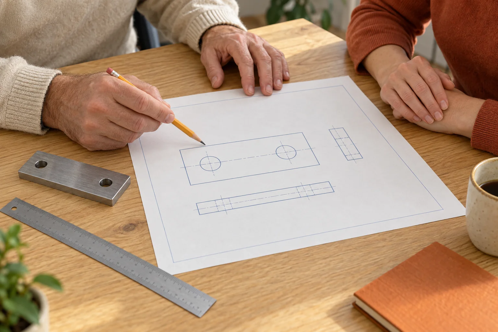
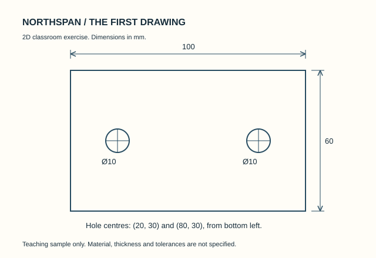

Intro to CAD
Start with lines and circles. Leave with a dimensioned 2D drawing you can explain.
£240 per learner · Up to 8 in a class
Explore Intro to CADA new tool. A drawing that makes sense. A plan you can explain. Learn one useful thing at a time, with a tutor beside you.
Small classes. Classroom equipment included. Starting requirements explained.
Know what you will work on before you set aside the time. Each course has a clear starting point and a manageable brief.
Start with lines and circles. Leave with a dimensioned 2D drawing you can explain.
£240 per learner · Up to 8 in a class
Explore Intro to CAD
NS 02 / 6 taught hoursFind the dimensions that matter, and the missing information worth asking about.
£135 per learner · Up to 10 in a class
Explore Workshop Drawing Reading NS 03 / 12 taught hours
NS 03 / 12 taught hoursTurn a short job list into a capacity conversation, with assumptions out in the open.
£285 per learner · Up to 8 in a class
Explore Production Planning EssentialsIn CAD, you draw it. In Drawing Reading, you learn what it tells you — and what it leaves out.
The same modest part gives you a reason to practise, ask questions and check your own work.
See the drawing course
You can read the computer, arithmetic and language requirements before choosing a class.
Prepare for learningClasses have up to eight learners, or ten for Drawing Reading. Time is set aside to compare and discuss your work.
Meet the centreBring a small group with the same learning need. We will distinguish an open class from a separate group discussion.
Options for employers